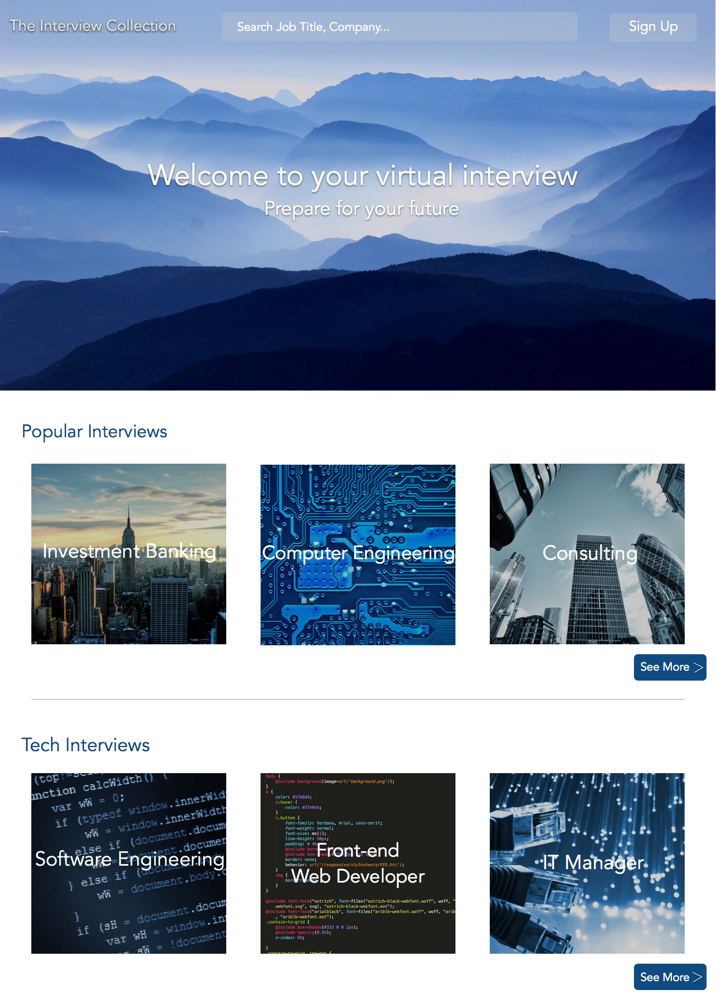
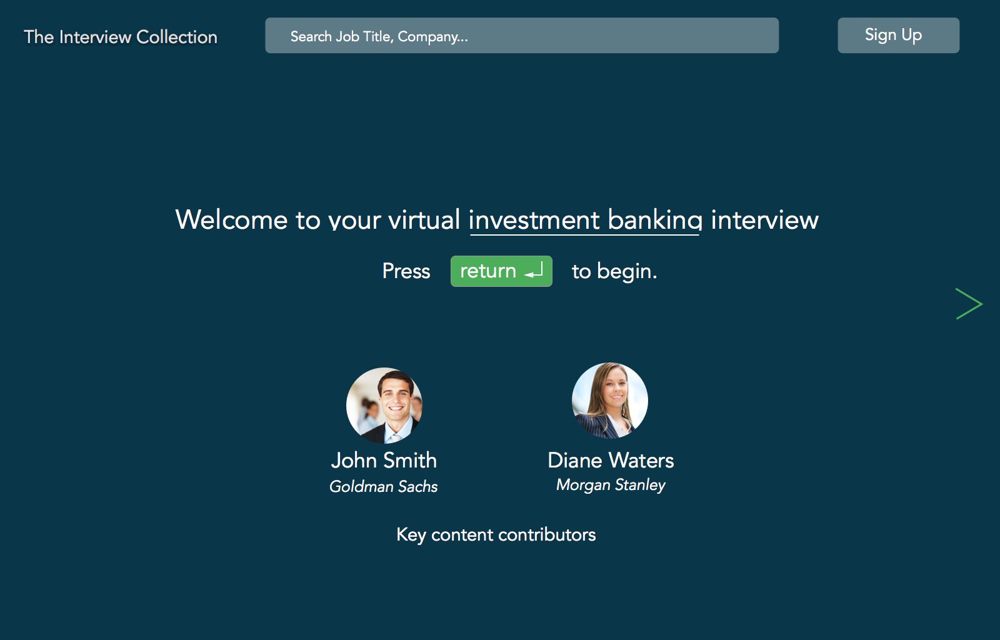
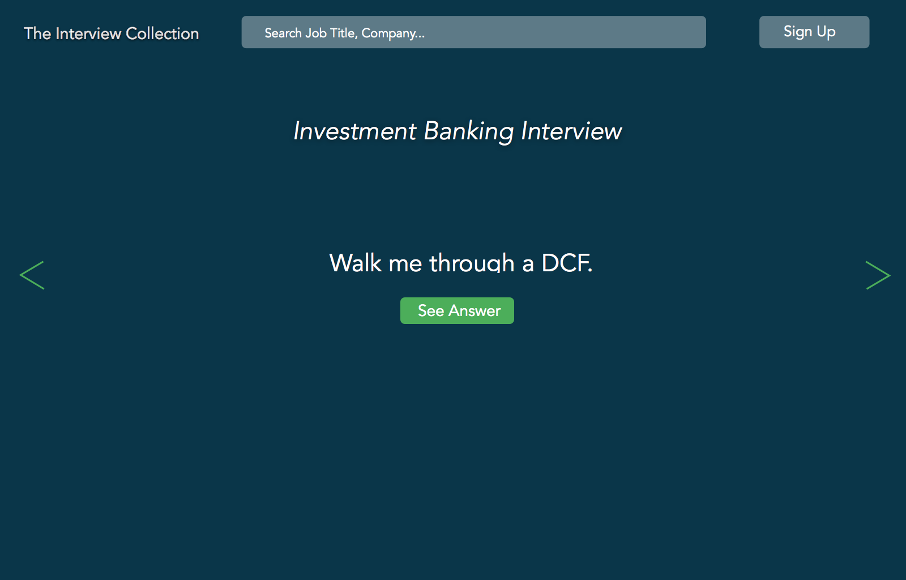

The Interview Collection is an idea of mine that helps jobseekers prepare for interviews by provding them with common questions asked for the paricular position they are interviewing for and gives them the ability to take a virtual mock interview. The concept is a work in progress and more research is still needed to be done.

Sample design of a virtual mock interview.

|
|